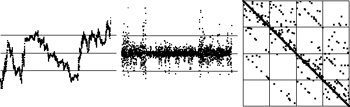
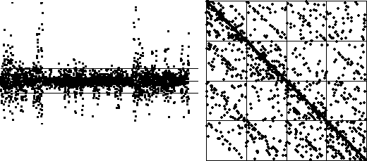

| Suppose we moved the first turning point, say to
|
| Will this driven IFS match the data driven IFS? |
| Here are the time series, differences,
and driven IFS with |
|  |
| Most of the driven IFS points lie along the diagonal. |
| Looking at the difference graph, this is no surprise, because almost all the differences lie in bin 2 and bin 3. |
| Here are the differences and driven IFS with |
|  |
| This is not a good match to the data, primarily because the antidiagonal squares 11, 14, 41 and 44 are much more heavily populated than they are in the data driven IFS. |
| Based on these observations, it appears that the first choice of turning point,
|
| To be sure, we should experiment with different placements of B1 and B3 before drawing any conclusion. |
Return to Sample